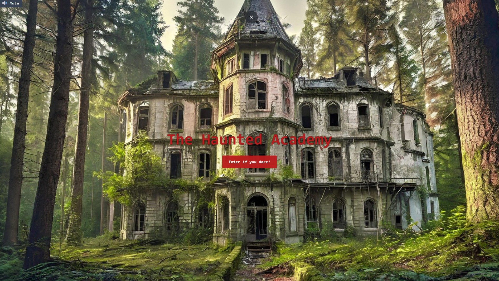
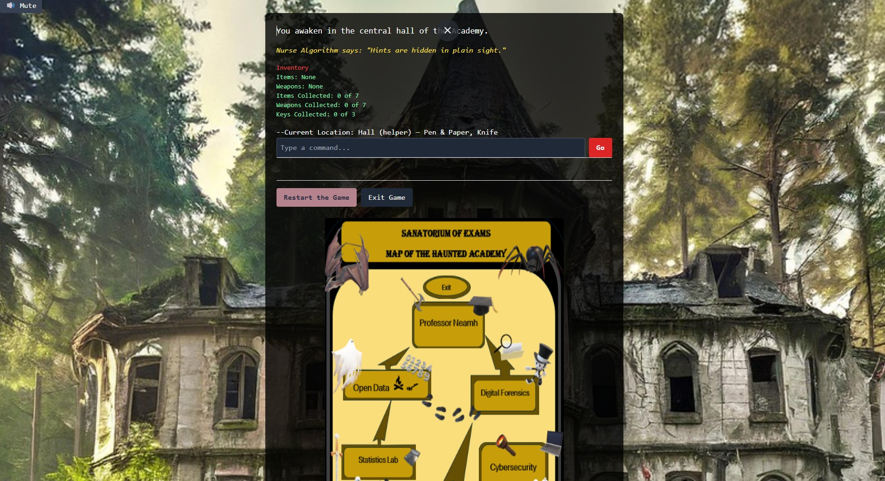
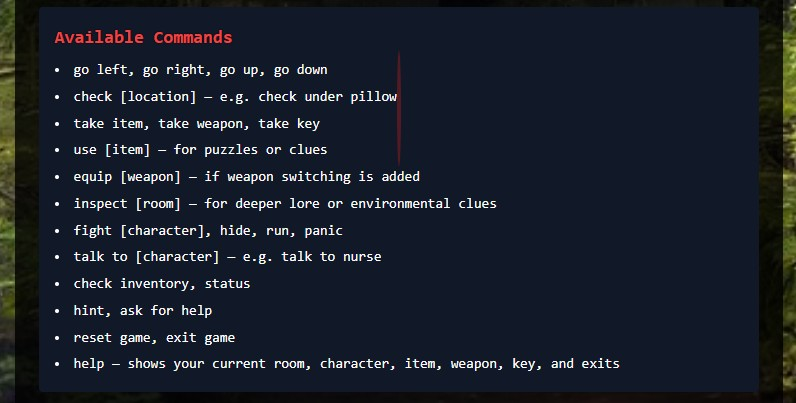
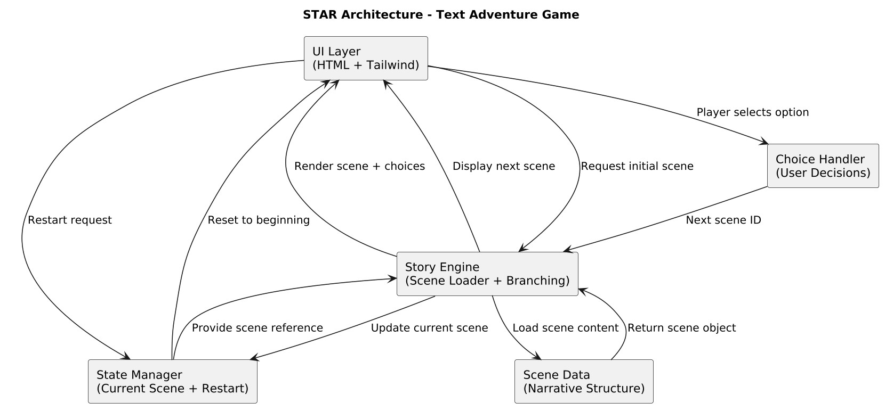
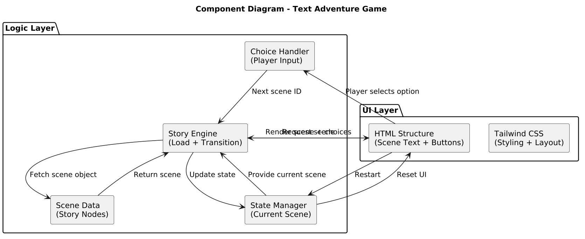
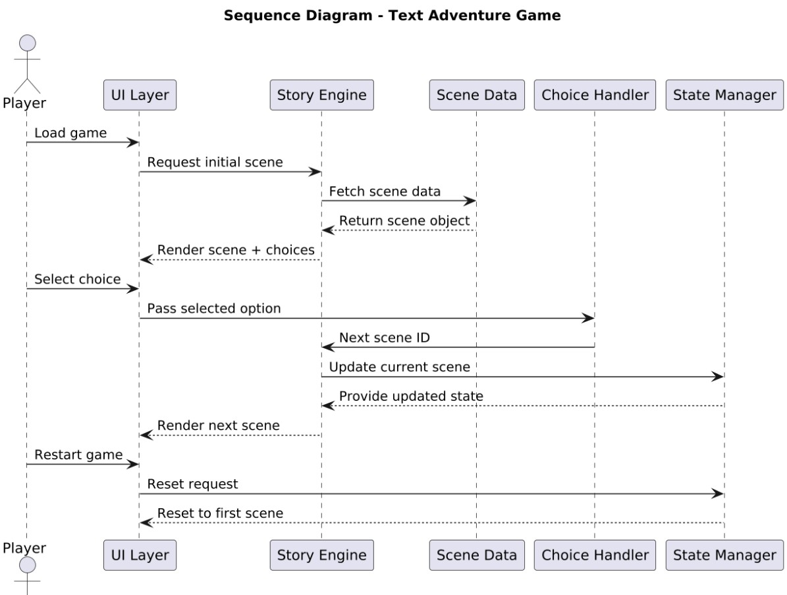
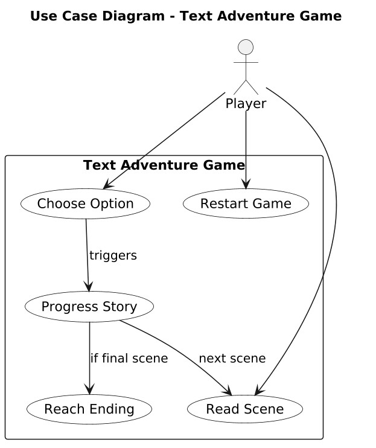

The Text Adventure Game is an interactive storytelling experience built to explore how narrative design and JavaScript logic can work together to create a branching, choice‑driven world. Instead of relying on heavy graphics or complex engines, the project focuses on atmosphere, pacing, and decision‑making, allowing players to shape the story through simple but meaningful choices. Each scene unfolds dynamically, with the interface updating instantly as the player moves through the narrative. The project demonstrates how a lightweight structure can still deliver immersion, tension, and replayability, turning a small web app into a tiny universe of possibilities.
The architecture is built around a modular scene engine that loads story nodes from a structured data object. Each node contains a description, a set of choices, and references to the next scenes, allowing the story to branch naturally without hard‑coding every path. The UI layer handles rendering the current scene and updating the available choices, while the logic layer manages transitions, state, and progression. This separation keeps the system flexible, making it easy to add new chapters, endings, or narrative twists without rewriting the core engine. The result is a clean, scalable architecture that supports expressive storytelling.
The project is composed of a few focused components that work together to deliver the interactive experience. The UI renderer displays the current scene text and dynamically generates the available choices. The story engine holds the narrative structure and determines which scene should load next based on the player’s decisions. A lightweight state manager tracks the player’s position in the story and ensures transitions feel seamless. Together, these components create a smooth loop of reading, choosing, and progressing, giving the game its rhythm and sense of flow.
The data flow begins when the game loads the initial scene from the story object. The UI displays the scene description and the choices available to the player. When a choice is selected, the system retrieves the corresponding next scene ID and passes it to the story engine, which loads the new scene and updates the UI accordingly. This loop continues until the player reaches an ending, at which point the interface offers the option to restart the adventure. The flow is simple but effective, allowing the narrative to branch cleanly while keeping the experience responsive and intuitive.
The design embraces minimalism to keep the focus on the story. The interface is intentionally uncluttered, using clean typography and subtle spacing to create a sense of calm immersion. Each choice is presented clearly, encouraging players to pause and consider their next step. The goal was to make the experience feel like reading a living storybook — one where every click carries weight and every decision shapes the path ahead. The simplicity of the visuals allows the narrative to breathe, while the dynamic updates give the game a sense of immediacy and presence.
One of the main challenges was structuring the story in a way that remained readable and scalable as branches multiplied. Designing a modular narrative engine taught the importance of clean data structures and clear separation between story content and game logic. Another challenge was ensuring that transitions felt smooth and that the UI updated without jarring reloads. Through this project, the value of simplicity became clear: even a small engine can support rich storytelling when the architecture is thoughtful and the narrative is well‑paced. It reinforced how code and creativity can work together to build interactive experiences that feel alive.
“Every choice is a doorway — step through one, and the story reshapes itself around you.”
The Text Adventure Game has a solid foundation, but there is still so much room for the world to expand and evolve. One of the most exciting opportunities lies in deepening the narrative system, allowing scenes to react not only to the player’s choices but also to the history of their journey. Introducing variables, inventory tracking, or character traits would give the story a sense of memory, making each playthrough feel more personal and unpredictable. The interface could also grow into a more atmospheric space, with subtle animations, sound cues, or visual themes that shift depending on the path the player takes. Another meaningful improvement would be the ability to load story data from external files, turning the engine into a reusable framework rather than a single contained narrative. This would open the door to larger stories, community‑created adventures, or even a small editor where writers could build their own branching worlds without touching the code. With these enhancements, the project could evolve from a simple assignment into a flexible storytelling platform — one that blends creativity, interactivity, and technical design into a richer, more immersive experience.






